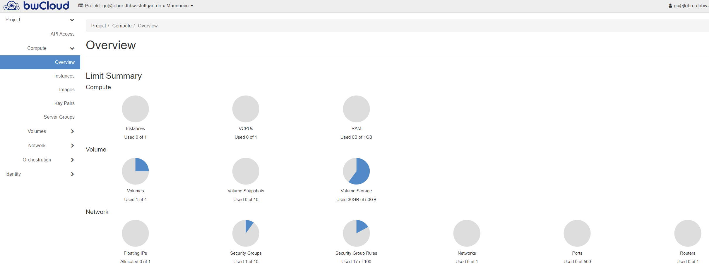
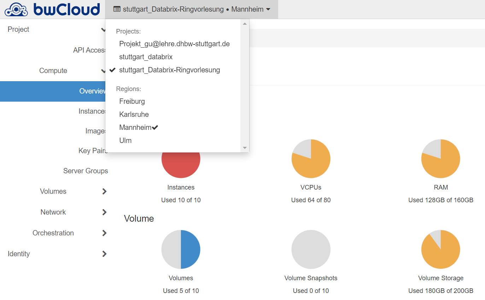

Gegenwärtig ist es so, dass sich jeder mit seiner @lehrer-E-Mail in die BW-Cloud einloggen darf. Zum Beispiel wäre es an der DHBW Stuttgart: xyz@lehrer.dhbw-stuttgart.de. Nachdem du dich in die bwCloud eingeloggt hast, solltest du ein Dashboard wie dieses sehen. Falls dies dein erstes Einloggen ist, hast du nur ein Standardprojekt mit nur einer VM Instanz zur Verfügung.
Rechenressourcen sind in Standardprojekten jedoch nicht ausreichend für das E-Learning-Webanwendungen. Sie müssen daher ein neues Projekt mit mehreren Ressourcen erstellen.
Um zusätzliche Ressourcen in der BW-Cloud zu beantragen, gehen Sie bitte wie folgt vor:Hinweis: Es ist möglich, dass der BW-Cloud-Mitarbeiter Ihre Informationen benötigt, um sicherzustellen, dass Sie ein Mitarbeiter der Hochschule sind.
Nach erfolgreicher Beantragung können Sie im bwCloud Dashboard sehen, dass Ihnen neue Projekte zugewiesen wurden. In diesen Projekten haben Sie dann mehr VM-Instanzen und Speichervolumen zur Verfügung.
